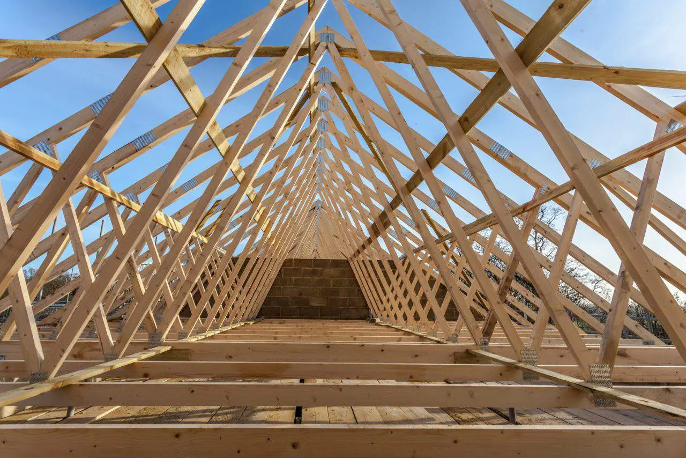
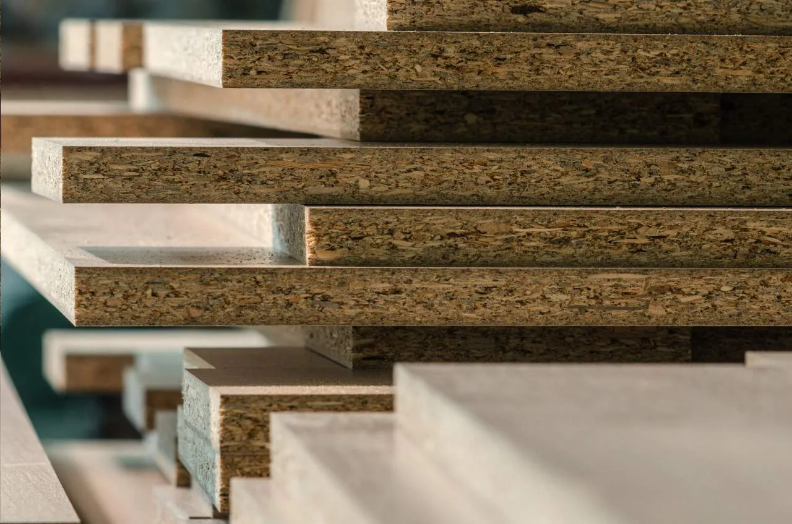
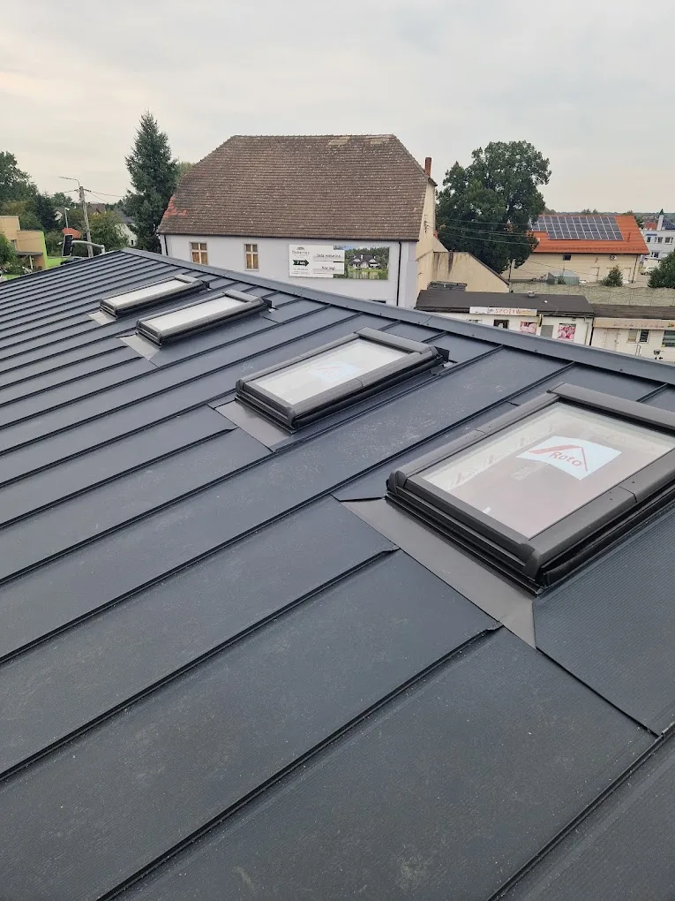

Od deski w tartaku
po szczyt dachu.
Marcin Gaździcki i Andrzej Domerecki prowadzą usługi ciesielsko-dekarskie w Suchodańcu od 2018 roku. Stawiamy więźby, kładziemy pokrycia i remontujemy dachy z drewna, które sami przygotowujemy - bez pośredników i bez czekania na dostawy z zewnątrz.
- 5,0★
- ocena Google
- 15
- opinii klientów
- 2018
- rok założenia



O firmie
Firma budowlana
i własny tartak w jednym.
Usługi Ciesielsko-Dekarskie Marcin Gaździcki i Andrzej Domerecki działają w Suchodańcu od 2018 roku. Łączymy dwie role rzadko spotykane pod jednym dachem: prowadzimy tartak, w którym przygotowujemy więźbę dachową, krawędziaki, łaty i deski, oraz ekipę ciesielsko-dekarską, która z tego samego drewna stawia i pokrywa dachy.
Dzięki temu klient nie czeka na materiał z zewnętrznej hurtowni - drewno konstrukcyjne mamy na miejscu, a jego jakość znamy od pierwszego cięcia.
Marcin Gaździcki & Andrzej Domerecki
Usługi Ciesielsko-Dekarskie, Suchodaniec
5,0★
15 opinii w Google
4,8
na Panoramie Firm
2018
na rynku od tego rocznika
2
wspólników prowadzących firmę
Drewno konstrukcyjne z własnego tartaku
Ciesielstwo i dekarstwo pod jedną umową
Otwarte w soboty do 13:00
Zakres usług
Od więźby po ostatnią
dachówkę i rynnę.
Oferta Gaździcki i Domerecki obejmuje pełny zakres prac ciesielskich i dekarskich, wsparty materiałem z własnego tartaku. Bez względu na to, czy stawiasz dach od podstaw, czy naprawiasz istniejące pokrycie, jesteśmy gotowi pomóc.
Konstrukcje
Montaż więźby dachowej
Konstrukcja i montaż dachu od podstaw, z drewna przygotowanego w naszym tartaku.
Dowiedz się więcejPokrycia
Pokrycia dachowe
Montaż blachodachówki i innych pokryć, dobranych do bryły budynku i budżetu.
Dowiedz się więcejNaprawa
Remonty i renowacje dachów
Naprawa, przebudowa i całkowita renowacja starych dachów, po oględzinach na miejscu.
Dowiedz się więcejDetale
Remont kominów
Naprawa i obróbka kominów, tak aby cały dach pozostał szczelny na lata.
Dowiedz się więcejKonserwacja
Mycie i malowanie dachów
Regularna pielęgnacja pokrycia, która wydłuża jego żywotność i poprawia wygląd budynku.
Dowiedz się więcejMateriał
Usługi tartaczne
Więźba dachowa, krawędziaki, łaty i deski budowlane - drewno prosto z tartaku, bez pośredników.
Dowiedz się więcejJak pracujemy
Cztery kroki
do gotowego dachu.
Każde zlecenie prowadzimy według tego samego schematu - od pierwszych pomiarów po odbiór gotowej pracy.
01 / POMIAR
Oględziny i kosztorys
Bezpłatnie oceniamy dach na miejscu i przygotowujemy wycenę materiału z tartaku i robocizny.
02 / MATERIAŁ
Przygotowanie drewna
Więźbę, łaty i deski tniemy i przygotowujemy we własnym tartaku, pod konkretny dach.
03 / REALIZACJA
Montaż i pokrycie
Ten sam zespół stawia konstrukcję i kładzie pokrycie, zgodnie z ustalonym terminem.
04 / ODBIÓR
Odbiór prac
Wspólnie sprawdzamy każdy detal, zanim uznamy dach za gotowy.
Nasz tartak
Czym różnimy się
od innych firm dekarskich.
Materiał
Drewno z własnego cięcia
Więźbę, krawędziaki, łaty i deski przygotowujemy sami - znamy jakość materiału od pierwszego cięcia w tartaku.
Odpowiedzialność
Dwóch wspólników na budowie
Marcin Gaździcki i Andrzej Domerecki prowadzą firmę wspólnie - jedna umowa, jedna odpowiedzialność za dach.
Czas
Solidność i terminowość
Działamy od 2018 roku, a ustalony termin realizacji to termin, na który można liczyć.
Realizacje
Zobacz dachy,
które już postawiliśmy.
Od desek w tartaku, przez więźbę, po gotowe pokrycie - zdjęcia z naszych ostatnich realizacji w Suchodańcu i okolicy.
Opinie klientów
Zdaniem osób,
które już z nami pracowały.
Joanna Pisulska
6 miesięcy temu
„Wszystko zgodnie z ustaleniami i terminowa realizacja. Polecam.”
Krzysztof Wieczorek
rok temu
„Świetny kontakt, fachowe doradztwo i życzliwe podejście do klienta. Widać, że to osoby z pasją i doświadczeniem. Na pewno skorzystam ponownie.”
Kornelia Siedlaczek
rok temu
„Pełen profesjonalizm, praca wykonana na szóstkę z plusem, solidnie i sprawnie. Polecam.”
Kasia
rok temu
„Polecam, świetna ekipa, profesjonalne wykonanie.”
Anna Spectre
3 lata temu
„Profesjonalna i kompleksowa obsługa. Polecam.”
Izabela Mazurek
rok temu
„Pełen profesjonalizm!”
Obszar działania
Suchodaniec i okolice
województwa opolskiego.
Realizujemy zlecenia w Suchodańcu oraz okolicznych miejscowościach gminy Bierawa i powiatu kędzierzyńsko-kozielskiego. Zadzwoń, żeby ustalić dostępność w Twojej miejscowości.
Umów wycenę
Porozmawiajmy
o Twoim dachu.
Skontaktuj się z nami i omów zakres prac. Doradzimy w doborze materiału z tartaku i przygotujemy bezpłatny kosztorys.
609 754 859 Zadzwoń terazWspólnicy
Marcin Gaździcki, Andrzej Domerecki
Adres
Kadetów Lwowskich 4, 47-180 Suchodaniec
Godziny
Pon–Pt 07:00–17:00, Sob 07:00–13:00, Nd zamknięte
Telefon
609 754 859NIP / REGON
7561986522 / 380466400